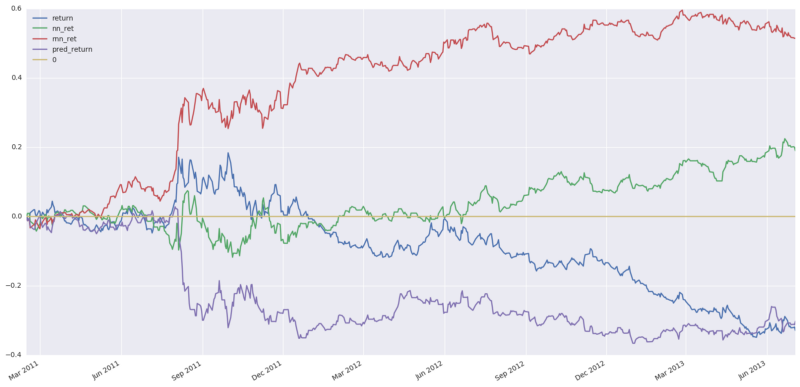
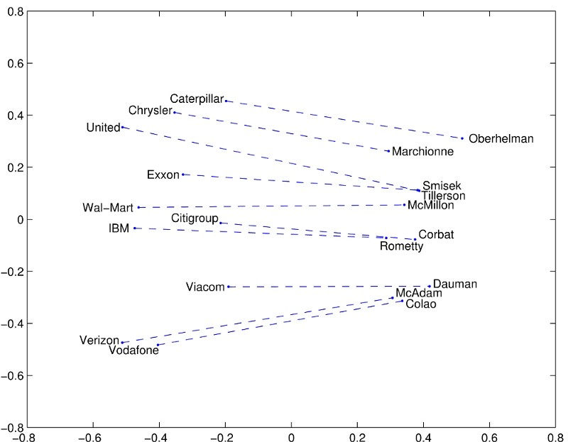
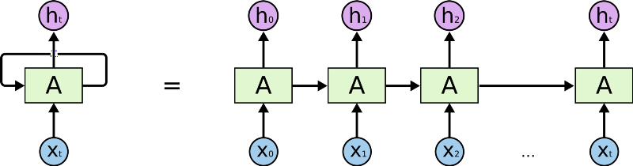
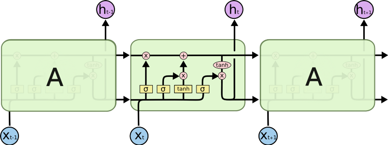
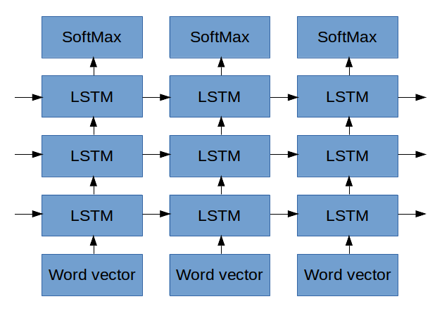
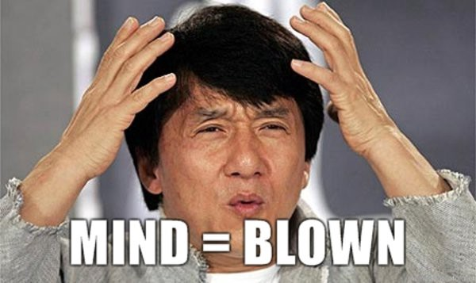

Deep Learning The Stock Market
_ Update 15.03.2024 I wrote this more than seven years ago. My understanding has evolved since then, and the world of deep learning has gone through more than one revolution since. It was popular back in the day and might still be a fun read though you might learn more accurate and upto date information somewhere else_
_ Update 25.1.17 — Took me a while but_ here is an ipython notebook with a rough implementation

In the past few months I’ve been fascinated with “Deep Learning”, especially its applications to language and text. I’ve spent the bulk of my career in financial technologies, mostly in algorithmic trading and alternative data services. You can see where this is going.
I wrote this to get my ideas straight in my head. While I’ve become a “Deep Learning” enthusiast, I don’t have too many opportunities to brain dump an idea in most of its messy glory. I think that a decent indication of a clear thought is the ability to articulate it to people not from the field. I hope that I’ve succeeded in doing that and that my articulation is also a pleasurable read.
Why NLP is relevant to Stock prediction
In many NLP problems we end up taking a sequence and encoding it into a single fixed size representation, then decoding that representation into another sequence. For example, we might tag entities in the text, translate from English to French or convert audio frequencies to text. There is a torrent of work coming out in these areas and a lot of the results are achieving state of the art performance.
In my mind the biggest difference between the NLP and financial analysis is that language has some guarantee of structure, it’s just that the rules of the structure are vague. Markets, on the other hand, don’t come with a promise of a learnable structure, that such a structure exists is the assumption that this project would prove or disprove (rather it might prove or disprove if I can find that structure).
Assuming the structure is there, the idea of summarizing the current state of the market in the same way we encode the semantics of a paragraph seems plausible to me. If that doesn’t make sense yet, keep reading. It will.
You shall know a word by the company it keeps (Firth, J. R. 1957:11)
There is tons of literature on word embeddings. Richard Socher’s lecture is a great place to start. In short, we can make a geometry of all the words in our language, and that geometry captures the meaning of words and relationships between them. You may have seen the example of “King-man +woman=Queen” or something of the sort.

Embeddings are cool because they let us represent information in a condensed way. The old way of representing words was holding a vector (a big list of numbers) that was as long as the number of words we know, and setting a 1 in a particular place if that was the current word we are looking at. That is not an efficient approach, nor does it capture any meaning. With embeddings, we can represent all of the words in a fixed number of dimensions (300 seems to be plenty, 50 works great) and then leverage their higher dimensional geometry to understand them.
The picture below shows an example. An embedding was trained on more or less the entire internet. After a few days of intensive calculations, each word was embedded in some high dimensional space. This “space” has a geometry, concepts like distance, and so we can ask which words are close together. The authors/inventors of that method made an example. Here are the words that are closest to Frog.
But we can embed more than just words. We can do, say , stock market embeddings.
Market2Vec
The first word embedding algorithm I heard about was word2vec. I want to get the same effect for the market, though I’ll be using a different algorithm. My input data is a csv, the first column is the date, and there are 4*1000 columns corresponding to the High Low Open Closing price of 1000 stocks. That is my input vector is 4000 dimensional, which is too big. So the first thing I’m going to do is stuff it into a lower dimensional space, say 300 because I liked the movie.
Taking something in 4000 dimensions and stuffing it into a 300-dimensional space my sound hard but its actually easy. We just need to multiply matrices. A matrix is a big excel spreadsheet that has numbers in every cell and no formatting problems. Imagine an excel table with 4000 columns and 300 rows, and when we basically bang it against the vector a new vector comes out that is only of size 300. I wish that’s how they would have explained it in college.
The fanciness starts here as we’re going to set the numbers in our matrix at random, and part of the “deep learning” is to update those numbers so that our excel spreadsheet changes. Eventually this matrix spreadsheet (I’ll stick with matrix from now on) will have numbers in it that bang our original 4000 dimensional vector into a concise 300 dimensional summary of itself.
We’re going to get a little fancier here and apply what they call an activation function. We’re going to take a function, and apply it to each number in the vector individually so that they all end up between 0 and 1 (or 0 and infinity, it depends). Why ? It makes our vector more special, and makes our learning process able to understand more complicated things. How?
So what? What I’m expecting to find is that that new embedding of the market prices (the vector) into a smaller space captures all the essential information for the task at hand, without wasting time on the other stuff. So I’d expect they’d capture correlations between other stocks, perhaps notice when a certain sector is declining or when the market is very hot. I don’t know what traits it will find, but I assume they’ll be useful.
Now What
Lets put aside our market vectors for a moment and talk about language models. Andrej Karpathy wrote the epic post “The Unreasonable effectiveness of Recurrent Neural Networks”. If I’d summarize in the most liberal fashion the post boils down to
- If we look at the works of Shakespeare and go over them character by character, we can use “deep learning” to learn a language model.
- A language model (in this case) is a magic box. You put in the first few characters and it tells you what the next one will be.
- If we take the character that the language model predicted and feed it back in we can keep going forever.
And then as a punchline, he generated a bunch of text that looks like Shakespeare. And then he did it again with the Linux source code. And then again with a textbook on Algebraic geometry.
So I’ll get back to the mechanics of that magic box in a second, but let me remind you that we want to predict the future market based on the past just like he predicted the next word based on the previous one. Where Karpathy used characters, we’re going to use our market vectors and feed them into the magic black box. We haven’t decided what we want it to predict yet, but that is okay, we won’t be feeding its output back into it either.
Going deeper
I want to point out that this is where we start to get into the deep part of deep learning. So far we just have a single layer of learning, that excel spreadsheet that condenses the market. Now we’re going to add a few more layers and stack them, to make a “deep” something. That’s the deep in deep learning.
So Karpathy shows us some sample output from the Linux source code, this is stuff his black box wrote.
static void action_new_function(struct s_stat_info *wb)
{
unsigned long flags;
int lel_idx_bit = e->edd, *sys & ~((unsigned long) *FIRST_COMPAT);
buf[0] = 0xFFFFFFFF & (bit << 4);
min(inc, slist->bytes);
printk(KERN_WARNING "Memory allocated %02x/%02x, "
"original MLL instead\n"),
min(min(multi_run - s->len, max) * num_data_in),
frame_pos, sz + first_seg);
div_u64_w(val, inb_p);
spin_unlock(&disk->queue_lock);
mutex_unlock(&s->sock->mutex);
mutex_unlock(&func->mutex);
return disassemble(info->pending_bh);
}
Notice that it knows how to open and close parentheses, and respects indentation conventions; The contents of the function are properly indented and the multi-line printk statement has an inner indentation. That means that this magic box understands long range dependencies. When it’s indenting within the print statement it knows it’s in a print statement and also remembers that it’s in a function( Or at least another indented scope). That’s nuts. It’s easy to gloss over that but an algorithm that has the ability to capture and remember long term dependencies is super useful because… We want to find long term dependencies in the market.
Inside the magical black box
What’s inside this magical black box? It is a type of Recurrent Neural Network (RNN) called an LSTM. An RNN is a deep learning algorithm that operates on sequences (like sequences of characters). At every step, it takes a representation of the next character (Like the embeddings we talked about before) and operates on the representation with a matrix, like we saw before. The thing is, the RNN has some form of internal memory, so it remembers what it saw previously. It uses that memory to decide how exactly it should operate on the next input. Using that memory, the RNN can “remember” that it is inside of an intended scope and that is how we get properly nested output text.

A fancy version of an RNN is called a Long Short Term Memory (LSTM). LSTM has cleverly designed memory that allows it to
- Selectively choose what it remembers
- Decide to forget
- Select how much of it’s memory it should output.

So an LSTM can see a “{“ and say to itself “Oh yeah, that’s important I should remember that” and when it does, it essentially remembers an indication that it is in a nested scope. Once it sees the corresponding “}” it can decide to forget the original opening brace and thus forget that it is in a nested scope.
We can have the LSTM learn more abstract concepts by stacking a few of them on top of each other, that would make us “Deep” again. Now each output of the previous LSTM becomes the inputs of the next LSTM, and each one goes on to learn higher abstractions of the data coming in. In the example above (and this is just illustrative speculation), the first layer of LSTMs might learn that characters separated by a space are “words”. The next layer might learn word types like (**static** **void** **action_new_function).**The next layer might learn the concept of a function and its arguments and so on. It’s hard to tell exactly what each layer is doing, though Karpathy’s blog has a really nice example of how he did visualize exactly that.
Connecting Market2Vec and LSTMs
The studious reader will notice that Karpathy used characters as his inputs, not embeddings (Technically a one-hot encoding of characters). But, Lars Eidnes actually used word embeddings when he wrote Auto-Generating Clickbait With Recurrent Neural Network

The figure above shows the network he used. Ignore the SoftMax part (we’ll get to it later). For the moment, check out how on the bottom he puts in a sequence of words vectors at the bottom and each one. (Remember, a “word vector” is a representation of a word in the form of a bunch of numbers, like we saw in the beginning of this post). Lars inputs a sequence of Word Vectors and each one of them:
- Influences the first LSTM
- Makes it’s LSTM output something to the LSTM above it
- Makes it’s LSTM output something to the LSTM for the next word
We’re going to do the same thing with one difference, instead of word vectors we’ll input “MarketVectors”, those market vectors we described before. To recap, the MarketVectors should contain a summary of what’s happening in the market at a given point in time. By putting a sequence of them through LSTMs I hope to capture the long term dynamics that have been happening in the market. By stacking together a few layers of LSTMs I hope to capture higher level abstractions of the market’s behavior.
What Comes out
Thus far we haven’t talked at all about how the algorithm actually learns anything, we just talked about all the clever transformations we’ll do on the data. We’ll defer that conversation to a few paragraphs down, but please keep this part in mind as it is the se up for the punch line that makes everything else worthwhile.
In Karpathy’s example, the output of the LSTMs is a vector that represents the next character in some abstract representation. In Eidnes’ example, the output of the LSTMs is a vector that represents what the next word will be in some abstract space. The next step in both cases is to change that abstract representation into a probability vector, that is a list that says how likely each character or word respectively is likely to appear next. That’s the job of the SoftMax function. Once we have a list of likelihoods we select the character or word that is the most likely to appear next.
In our case of “predicting the market”, we need to ask ourselves what exactly we want to market to predict? Some of the options that I thought about were:
- Predict the next price for each of the 1000 stocks
- Predict the value of some index (S&P, VIX etc) in the next n minutes.
- Predict which of the stocks will move up by more than x% in the next n minutes
- (My personal favorite) Predict which stocks will go up/down by 2x% in the next n minutes while not going down/up by more than x% in that time.
- (The one we’ll follow for the remainder of this article). Predict when the VIX will go up/down by 2x% in the next n minutes while not going down/up by more than x% in that time.
1 and 2 are regression problems, where we have to predict an actual number instead of the likelihood of a specific event (like the letter n appearing or the market going up). Those are fine but not what I want to do.
3 and 4 are fairly similar, they both ask to predict an event (In technical jargon — a class label). An event could be the letter n appearing next or it could be Moved up 5% while not going down more than 3% in the last 10 minutes. The trade-off between 3 and 4 is that 3 is much more common and thus easier to learn about while 4 is more valuable as not only is it an indicator of profit but also has some constraint on risk.
5 is the one we’ll continue with for this article because it’s similar to 3 and 4 but has mechanics that are easier to follow. The VIX is sometimes called the Fear Index and it represents how volatile the stocks in the S&P500 are. It is derived by observing the implied volatility for specific options on each of the stocks in the index.
Sidenote — Why predict the VIX
What makes the VIX an interesting target is that
- It is only one number as opposed to 1000s of stocks. This makes it conceptually easier to follow and reduces computational costs.
- It is the summary of many stocks so most if not all of our inputs are relevant
- It is not a linear combination of our inputs. Implied volatility is extracted from a complicated, non-linear formula stock by stock. The VIX is derived from a complex formula on top of that. If we can predict that, it’s pretty cool.
- It’s tradeable so if this actually works we can use it.
Back to our LSTM outputs and the SoftMax
How do we use the formulations we saw before to predict changes in the VIX a few minutes in the future? For each point in our dataset, we’ll look what happened to the VIX 5 minutes later. If it went up by more than 1% without going down more than 0.5% during that time we’ll output a 1, otherwise a 0. Then we’ll get a sequence that looks like:
0,0,0,0,0,1,1,0,0,0,1,1,0,0,0,0,1,1,1,0,0,0,0,0 ….
We want to take the vector that our LSTMs output and squish it so that it gives us the probability of the next item in our sequence being a 1. The squishing happens in the SoftMax part of the diagram above. (Technically, since we only have 1 class now, we use a sigmoid ).
So before we get into how this thing learns, let’s recap what we’ve done so far
- We take as input a sequence of price data for 1000 stocks
- Each timepoint in the sequence is a snapshot of the market. Our input is a list of 4000 numbers. We use an embedding layer to represent the key information in just 300 numbers.
- Now we have a sequence of embeddings of the market. We put those into a stack of LSTMs, timestep by timestep. The LSTMs remember things from the previous steps and that influences how they process the current one.
- We pass the output of the first layer of LSTMs into another layer. These guys also remember and they learn higher level abstractions of the information we put in.
- Finally, we take the output from all of the LSTMs and “squish them” so that our sequence of market information turns into a sequence of probabilities. The probability in question is “How likely is the VIX to go up 1% in the next 5 minutes without going down 0.5%”
How does this thing learn?
Now the fun part. Everything we did until now was called the forward pass, we’d do all of those steps while we train the algorithm and also when we use it in production. Here we’ll talk about the backward pass, the part we do only while in training that makes our algorithm learn.
So during training, not only did we prepare years worth of historical data, we also prepared a sequence of prediction targets, that list of 0 and 1 that showed if the VIX moved the way we want it to or not after each observation in our data.
To learn, we’ll feed the market data to our network and compare its output to what we calculated. Comparing in our case will be simple subtraction, that is we’ll say that our model’s error is
ERROR = (((precomputed)— (predicted probability))² )^(1/2)
Or in English, the square root of the square of the difference between what actually happened and what we predicted.
Here’s the beauty. That’s a differential function, that is, we can tell by how much the error would have changed if our prediction would have changed a little. Our prediction is the outcome of a differentiable function, the SoftMax The inputs to the softmax, the LSTMs are all mathematical functions that are differentiable. Now all of these functions are full of parameters, those big excel spreadsheets I talked about ages ago. So at this stage what we do is take the derivative of the error with respect to every one of the millions of parameters in all of those excel spreadsheets we have in our model. When we do that we can see how the error will change when we change each parameter, so we’ll change each parameter in a way that will reduce the error.
This procedure propagates all the way to the beginning of the model. It tweaks the way we embed the inputs into MarketVectors so that our MarketVectors represent the most significant information for our task.
It tweaks when and what each LSTM chooses to remember so that their outputs are the most relevant to our task.
It tweaks the abstractions our LSTMs learn so that they learn the most important abstractions for our task.
Which in my opinion is amazing because we have all of this complexity and abstraction that we never had to specify anywhere. It’s all inferred MathaMagically from the specification of what we consider to be an error.

What’s next
Now that I’ve laid this out in writing and it still makes sense to me I want
- To see if anyone bothers reading this.
- To fix all of the mistakes my dear readers point out
- Consider if this is still feasible
- And build it
So, if you’ve come this far please point out my errors and share your inputs.
Other thoughts
Here are some mostly more advanced thoughts about this project, what other things I might try and why it makes sense to me that this may actually work.
Liquidity and efficient use of capital
Generally the more liquid a particular market is the more efficient that is. I think this is due to a chicken and egg cycle, whereas a market becomes more liquid it is able to absorb more capital moving in and out without that capital hurting itself. As a market becomes more liquid and more capital can be used in it, you’ll find more sophisticated players moving in. This is because it is expensive to be sophisticated, so you need to make returns on a large chunk of capital in order to justify your operational costs.
A quick corollary is that in less liquid markets the competition isn’t quite as sophisticated and so the opportunities a system like this can bring may not have been traded away. The point being were I to try and trade this I would try and trade it on less liquid segments of the market, that is maybe the TASE 100 instead of the S&P 500.
This stuff is new
The knowledge of these algorithms, the frameworks to execute them and the computing power to train them are all new at least in the sense that they are available to the average Joe such as myself. I’d assume that top players have figured this stuff out years ago and have had the capacity to execute for as long but, as I mention in the above paragraph, they are likely executing in liquid markets that can support their size. The next tier of market participants, I assume, have a slower velocity of technological assimilation and in that sense, there is or soon will be a race to execute on this in as yet untapped markets.
Multiple Time Frames
While I mentioned a single stream of inputs in the above, I imagine that a more efficient way to train would be to train market vectors (at least) on multiple time frames and feed them in at the inference stage. That is, my lowest time frame would be sampled every 30 seconds and I’d expect the network to learn dependencies that stretch hours at most.
I don’t know if they are relevant or not but I think there are patterns on multiple time frames and if the cost of computation can be brought low enough then it is worthwhile to incorporate them into the model. I’m still wrestling with how best to represent these on the computational graph and perhaps it is not mandatory to start with.
MarketVectors
When using word vectors in NLP we usually start with a pretrained model and continue adjusting the embeddings during training of our model. In my case, there are no pretrained market vector available nor is tehre a clear algorithm for training them.
My original consideration was to use an auto-encoder like in this paper but end to end training is cooler.
A more serious consideration is the success of sequence to sequence models in translation and speech recognition, where a sequence is eventually encoded as a single vector and then decoded into a different representation (Like from speech to text or from English to French). In that view, the entire architecture I described is essentially the encoder and I haven’t really laid out a decoder.
But, I want to achieve something specific with the first layer, the one that takes as input the 4000 dimensional vector and outputs a 300 dimensional one. I want it to find correlations or relations between various stocks and compose features about them.
The alternative is to run each input through an LSTM, perhaps concatenate all of the output vectors and consider that output of the encoder stage. I think this will be inefficient as the interactions and correlations between instruments and their features will be lost, and thre will be 10x more computation required. On the other hand, such an architecture could naively be paralleled across multiple GPUs and hosts which is an advantage.
CNNs
Recently there has been a spur of papers on character level machine translation. This paper caught my eye as they manage to capture long range dependencies with a convolutional layer rather than an RNN. I haven’t given it more than a brief read but I think that a modification where I’d treat each stock as a channel and convolve over channels first (like in RGB images) would be another way to capture the market dynamics, in the same way that they essentially encode semantic meaning from characters.